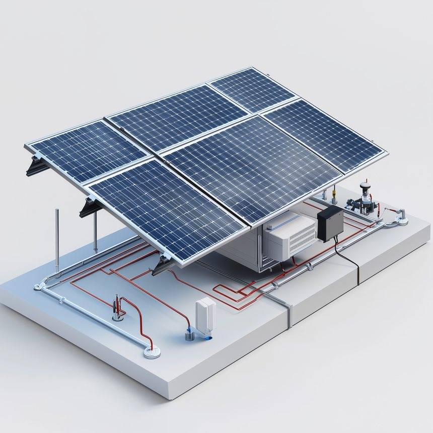
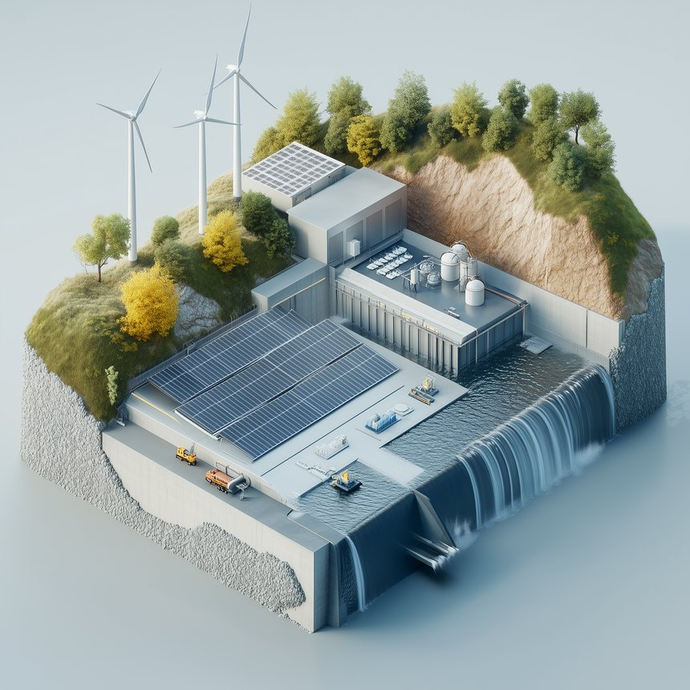
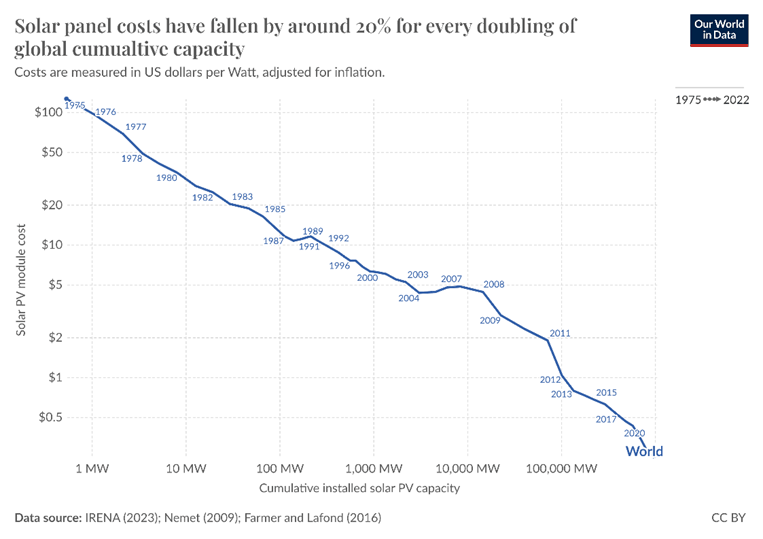
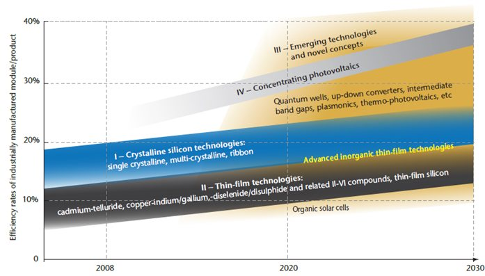

Energy Transition Watch: Breakthroughs in Solar PV Efficiency and Cost in 2024
Solar energy has entered a new era. In 2024, the combination of maturing technologies, rising global production, and continued cost compression is making solar photovoltaic (PV) power a cornerstone of the global energy transition. For institutional investors, this is not simply a clean energy story. It is an opportunity to align capital with long-term value creation, energy security, and regulatory momentum.
Solar PV is no longer a future-oriented investment. It is a present-day force that is reshaping how commercial assets are powered, how portfolios are decarbonized, and how ESG goals are delivered with discipline.
How Do Solar Panels Work?

At its core, a solar panel is like a high-tech sun catcher. Solar cells, mainly composed of silicon, capture sunlight and convert it into electricity. It sounds complex, but the process is simple: sunlight excites electrons in the solar cells, producing direct current (DC) electricity. An inverter then converts this DC into alternating current (AC) for everyday use in homes, commercial buildings, or the power grid.
For decades, silicon has been the backbone of solar technology. Monocrystalline cells, with their high efficiency rates, continue to lead the market, providing the best energy yield over the typical 25-year lifespan of a panel.
The Technology Stack: Efficiency and Application

Solar power is only part of the clean energy equation. While the sun powers energy production during the day, other sources like wind and hydropower fill in the gaps, often peaking at night or offering consistent generation. This blend creates a diversified and reliable renewable energy supply. For investors, solar isn’t a standalone solution—it’s a crucial piece of a larger, resilient strategy that mitigates the risks and volatility tied to fossil fuels.
Swanson’s Law: The Path to Lower Costs
One of the most important factors driving down the costs of solar energy is Swanson’s Law. This principle states that the price of solar PV modules drops by approximately 20% with every doubling of installed capacity. Named after SunPower founder Richard Swanson, the law highlights how scaling up production reduces manufacturing costs, making solar energy more affordable and accelerating its adoption globally. In fact, solar panel prices have fallen by nearly 90% in the last decade. This trend, mirroring cost curves like Moore’s Law in semiconductors, showcases how technological advancements and economies of scale drive down prices. For investors, understanding Swanson's Law provides a critical insight into why solar PV remains such a compelling investment as the market expands.

Here’s a quick look at the key technologies leading the charge in 2024:
Monocrystalline Silicon Solar Cells: Efficiency Leader
Monocrystalline cells remain the gold standard in the solar market, offering the highest efficiency rates (between 20-25%). Innovations such as Passivated Emitter and Rear Cell (PERC) and n-type silicon continue to enhance their performance. For investors, monocrystalline technology provides the dual advantage of reliability and cost efficiency. Not only do these cells offer higher energy yields, but ongoing advancements and large-scale production are driving down costs.
Photovoltaic technology status and prospects

Source: “Technology Roadmap – Solar photovoltaic energy”, IEA, 2010
Thin-Film Solar Cells: Flexibility and Application Diversity
Where flexibility is essential, thin-film solar cells offer solutions. Technologies such as Cadmium Telluride (CdTe) and Copper Indium Gallium Selenide (CIGS) provide lightweight, adaptable modules suitable for large-scale solar farms and building-integrated photovoltaic (BIPV) systems. While slightly less efficient than monocrystalline, their versatility makes them indispensable for projects where traditional silicon panels may not be practical.
Perovskite Solar Cells: The Next Big Leap
Perovskite solar cells are rapidly emerging as a disruptive technology in the solar PV landscape, with laboratory efficiency rates up to 25% [1]. When combined with silicon in tandem cells, perovskites promise even greater performance gains. These cells have the potential to be both cheaper and more efficient than traditional silicon technologies, offering a significant leap forward in solar PV efficiency and cost-effectiveness.

However, the road to commercialization presents significant challenges. Scaling production from the lab to large-scale manufacturing remains complex, particularly in maintaining uniformity and durability across mass-produced cells. While the cost advantages of perovskites over traditional silicon cells are undeniable, achieving reliable, large-scale production is still a major hurdle. Ongoing research is focused on overcoming these barriers, but investors should be mindful of the near-term risks associated with scaling as they consider the long-term potential of this breakthrough technology.
Bifacial PV Modules: Boosting Energy Yields
Bifacial PV modules capture sunlight on both sides, significantly increasing energy output by 10-30% over traditional panels [2]. By reflecting sunlight from surfaces like rooftops or the ground, bifacial technology maximizes energy generation in large-scale solar installations. Bifacial modules are increasingly used in utility-scale solar farms and floating solar installations, where reflected light from water or ground surfaces significantly enhances their performance. Although they have higher upfront costs, their durability and increased energy yields offer long-term financial benefits, particularly in high-reflectivity environments.
Strategic Implications for CRE Investors
Solar energy is playing an increasingly central role in clean energy portfolios for commercial property. From powering on-site operations to meeting tenant sustainability demands, the business case is becoming clearer with each technology cycle. Regulatory frameworks, including the EU Renewable Energy Directive, continue to strengthen the mandate for clean energy integration across the built environment.
For institutional asset managers, the challenge lies in balancing today’s proven technologies with tomorrow’s innovations. While monocrystalline panels remain a mainstay, emerging formats like bifacial and perovskite modules open new avenues for scale, yield, and asset differentiation. Underwriting solar investments today means understanding which technologies match which projects, and how to stage implementation over time.
Conclusion: Solar’s Momentum Is Now
Solar PV is no longer just viable, it is essential to many long-term real estate energy transition strategies. With multiple technologies competing to redefine efficiency and reduce costs, the sector offers a rare combination of scalability, visibility, and alignment with long-term sustainability goals.
Investors who understand the pace and structure of solar innovation will be better equipped to capture its potential. In 2024, the momentum is real and the window to lead is open.
[1] “Analysis of the Annual Performance of Bifacial Modules and Optimization Methods”, IEEE Journal of Photovoltaics, Yusufoglu et al, Jan 2015
[2] “Bifacial Photovoltaic Modules and Systems: Experience and Results from International Research and Pilot Applications”, IEA – Photovoltaic Power Systems Programme, 2021